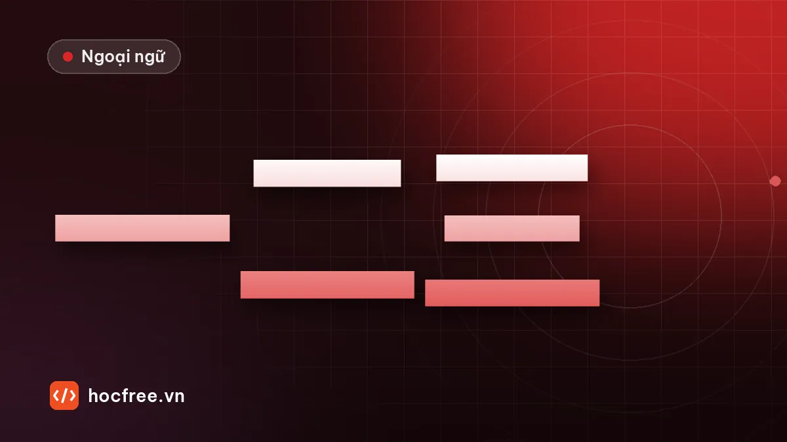

Số đếm tiếng Trung từ 0 đến 9999, hỏi tuổi và số điện thoại
Đếm từ 0 đến 9.999, phân biệt 二 và 两, hỏi tuổi bằng 几岁 và 多大, đọc số điện thoại với yāo, cách dùng 几 và 多少 cho đúng từng trường hợp.

Học xong bài này, bạn sẽ
- Đếm và đọc số đến 9.999
- Phân biệt 二 với 两, 几 với 多少
- Hỏi tuổi và đọc số điện thoại
Nên học trước: Câu hỏi 吗, phủ định 不, 也 và 都
Nội dung bài viết
Số đếm tiếng Trung rất logic: học thuộc 0–10 là đếm được đến 99, thêm 百 và 千 là đến 9.999. Bài này dạy đếm số, hai chữ "hai" (二 và 两), hỏi tuổi, hỏi số lượng và đọc số điện thoại, những thứ bạn dùng ngay khi đi chợ, đi làm.
Từ vựng: số 0–10
| Số | Chữ Hán | Pinyin | Số | Chữ Hán | Pinyin |
|---|---|---|---|---|---|
| 0 | 零 | líng | 6 | 六 | liù |
| 1 | 一 | yī | 7 | 七 | qī |
| 2 | 二 | èr | 8 | 八 | bā |
| 3 | 三 | sān | 9 | 九 | jiǔ |
| 4 | 四 | sì | 10 | 十 | shí |
| 5 | 五 | wǔ |
Âm Hán Việt quen thuộc: nhất, nhị, tam, tứ, ngũ, lục, thất, bát, cửu, thập.
Từ vựng bổ sung
| Chữ Hán | Pinyin | Nghĩa | Ví dụ |
|---|---|---|---|
| 百 | bǎi | trăm | 一百 |
| 千 | qiān | nghìn | 三千 |
| 两 | liǎng | hai (trước lượng từ) | 两个人 |
| 几 | jǐ | mấy (số nhỏ) | 你几岁？ |
| 多少 | duōshao | bao nhiêu | 多少人？ |
| 岁 | suì | tuổi | 我二十五岁。 |
| 多大 | duō dà | bao nhiêu tuổi | 你今年多大？ |
| 今年 | jīnnián | năm nay | 今年我三十岁。 |
| 个 | gè | cái, người (lượng từ chung) | 三个学生 |
| 手机 | shǒujī | điện thoại di động | 你的手机号是多少？ |
| 号码 | hàomǎ | số (điện thoại, phòng…) | 电话号码 |
| 孩子 | háizi | con, trẻ con | 你孩子几岁？ |
| 有 | yǒu | có | 我有两个孩子。 |
| 的 | de | của | 我的手机 |
有 và 的 sẽ được học kỹ ở bài gia đình; ở bài này bạn chỉ cần hiểu nghĩa "có" và "của".
Đếm từ 11 đến 9.999
| Quy tắc | Ví dụ |
|---|---|
| 11–19: 十 + đơn vị | 11 十一 shíyī, 15 十五 shíwǔ |
| Chục: số + 十 | 20 二十 èrshí, 90 九十 jiǔshí |
| Chục + đơn vị | 25 二十五, 99 九十九 |
| Trăm: số + 百 | 100 一百 yìbǎi, 300 三百 |
| Số 0 ở giữa đọc 零 một lần | 105 一百零五, 1.005 一千零五 |
| Trăm + chục: luôn đọc 一十 nếu chục là 1 | 110 一百一十, 115 一百一十五 |
| Nghìn: số + 千 | 2.026 两千零二十六, 3.800 三千八百 |
Lưu ý: 10 đọc 十, không nói 一十 khi đứng đầu. Nhưng 110 phải có 一十: 一百一十.
二 hay 两?
| Dùng 二 èr | Dùng 两 liǎng |
|---|---|
| Đếm số: 一、二、三 | Trước lượng từ: 两个人 (hai người), 两本书 |
| Số thứ tự, ngày tháng: 第二, 二月 (tháng 2) | Trước 百, 千 thường dùng 两: 两百, 两千 |
| Hàng đơn vị, hàng chục: 十二, 二十二 | 两点 (hai giờ) |
Lỗi hay gặp: ✘ 二个人 → ✔ 两个人. Lỗi ngược: ✘ 十两 → ✔ 十二.
几 hay 多少?
- 几: khi đoán số nhỏ (thường dưới 10), bắt buộc có lượng từ: 你有几个孩子？ (Bạn có mấy con?)
- 多少: số bất kỳ, thường lớn hơn 10, có thể bỏ lượng từ: 你们公司有多少人？ (Công ty bạn có bao nhiêu người?)
Hỏi tuổi đúng phép lịch sự
| Hỏi ai | Câu hỏi |
|---|---|
| Trẻ em (dưới khoảng 10 tuổi) | 你几岁？ |
| Người cùng lứa, người trẻ | 你今年多大？ |
| Người lớn tuổi | 您今年多大年纪？ (年纪 niánjì: tuổi tác) |
Câu trả lời không cần động từ: 我二十八岁。 (Tôi 28 tuổi.) Đây là một trong số ít câu tiếng Trung không cần 是. Phủ định thì phải có 是: 我不是二十八岁。
Đọc số điện thoại
Số điện thoại đọc từng chữ số, và số 1 thường đọc yāo để không nhầm với 七 qī: 0912 345 678 → líng jiǔ yāo èr, sān sì wǔ, liù qī bā. Hỏi số: 你的手机号是多少？ (Số điện thoại của bạn là bao nhiêu?) Lưu ý: hỏi số điện thoại dùng 多少, không dùng 几.
Hội thoại: làm quen đồng nghiệp
A: 你今年多大？
Nǐ jīnnián duō dà?
Năm nay bạn bao nhiêu tuổi?
B: 我二十九岁。你呢？
Wǒ èrshíjiǔ suì. Nǐ ne?
Mình 29 tuổi. Còn bạn?
A: 我三十二岁。你有孩子吗？
Wǒ sānshí'èr suì. Nǐ yǒu háizi ma?
Mình 32. Bạn có con chưa?
B: 有，两个。
Yǒu, liǎng gè.
Có, hai đứa.
A: 你的手机号是多少？
Nǐ de shǒujī hào shì duōshao?
Số điện thoại của bạn là bao nhiêu?
B: 零九八七，六五四，三二一。
Líng jiǔ bā qī, liù wǔ sì, sān èr yāo.
0987 654 321.
Luyện tập
Bài 1. Viết bằng chữ Hán: 14, 40, 68, 99, 101, 110, 250, 1.008, 2.026, 5.500.
Bài 2. Điền 二 hoặc 两: (1) ___个朋友 (2) 十___ (3) ___月 (4) ___百 (5) 第___
Bài 3. Điền 几 hoặc 多少: (1) 你有___个孩子？ (2) 你们公司有___人？ (3) 你的手机号是___？ (4) 你女儿___岁？
Xem đáp án
Bài 1. 十四, 四十, 六十八, 九十九, 一百零一, 一百一十, 两百五十 (hoặc 二百五十), 一千零八, 两千零二十六, 五千五百.
Bài 2. (1) 两 (2) 二 (3) 二 (4) 两 (cũng gặp 二百) (5) 二.
Bài 3. (1) 几 (2) 多少 (3) 多少 (4) 几.
Kiểm tra cuối bài
1. Số 1 trong số điện thoại thường đọc thế nào?
2. "Hai người" nói thế nào?
3. Hỏi tuổi một người ngang hàng, nói thế nào?
Xem đáp án
- yāo.
- 两个人。
- 你今年多大？
Tổng kết và ôn tập
- Số ghép theo logic chục – trăm – nghìn; số 0 ở giữa đọc 零.
- 两 trước lượng từ, 二 khi đếm và trong số thứ tự.
- 几 cho số nhỏ có lượng từ, 多少 cho số lớn và số điện thoại.
Bài ôn: mỗi khi thấy biển số xe, giá tiền, số nhà trong ngày, đọc thầm bằng tiếng Trung. Bài tiếp theo: ngày tháng, thứ và giờ.
Bài tập thực hành
- Đọc to 15 số trong phần luyện tập, rồi đọc số điện thoại của 3 người thân bằng tiếng Trung.
- Viết 5 câu hỏi – đáp về tuổi của người trong gia đình.
Làm xong bài tập mới chuyển sang bài tiếp theo: đọc to, tự viết chữ Hán và tự chấm đáp án là cách duy nhất để nhớ lâu.